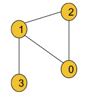
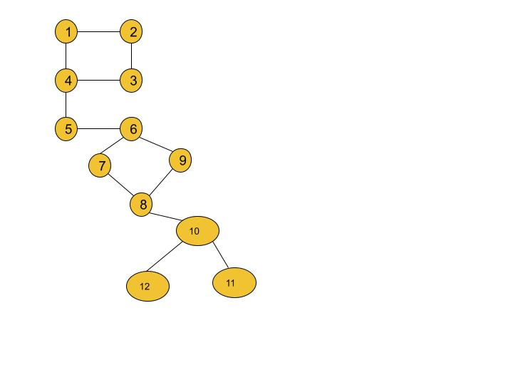
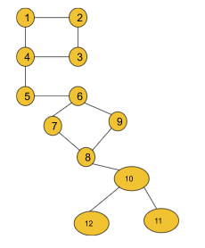

Bridges in Graph - Using Tarjan's Algorithm of time in and low time: G-55
Problem Statement: There are n servers numbered from 0 to n - 1 connected by undirected server-to-server connections forming a network where connections[i] = [ai, bi] represents a connection between servers ai and bi. Any server can reach other servers directly or indirectly through the network.
A critical connection is a connection that, if removed, will make some servers unable to reach some other servers.
Return all critical connections in the network in any order.
Note: Here servers mean the nodes of the graph. The problem statement is taken from leetcode.
Input Format: N = 4, connections = [[0,1],[1,2],[2,0],[1,3]]
Result: [[1, 3]]
Explanation: The edge [1, 3] is the critical edge because if we remove the edge the graph will be divided into 2 components.
Example 2:
Input Format:Result: [[4, 5], [5, 6], [8, 10]]
Explanation: If we remove any of the three edges, the graph will be divided into 2 or more components.
Solution
Disclaimer: Don't jump directly to the solution, try it out yourself first.
Before moving on to the solution, we need to understand the definition of a bridge in a graph.
Bridge:
Any edge in a component of a graph is called a bridge when the component is divided into 2 or more components if we remove that particular edge.
Example:

If in this graph, we remove the edge (5,6), the component gets divided into 2 components. So, it is a bridge. But if we remove the edge (2,3) the component remains connected. So, this is not a bridge. In this graph, we have a total of 3 bridges i.e. (4,5), (5,6), and (10, 8).
In order to find all the bridges of a graph, we will implement some logic over the DFS algorithm. This is more of an algorithm-based approach. So, let’s discuss the algorithm in detail. Before that, we will discuss two important concepts of the algorithm i.e. time of insertion and lowest time of insertion.
Time of insertion: Dring the DFS call, the time when a node is visited, is called its time of insertion. For example, if in the above graph, we start DFS from node 1 it will visit node 1 first then node 2, node 3, node 4, and so on. So, the time of insertion for node 1 will be 1, node 2 will be 2, node 3 will be 3 and it will continue like this. To store the time of insertion for each node, we will use a time array.
Lowest time of insertion: In this case, the current node refers to all its adjacent nodes except the parent and takes the minimum lowest time of insertion into account. To store this entity for each node, we will use another ‘low’ array.
The logical modification of the DFS algorithm is discussed below:
After the DFS for any adjacent node gets completed, we will just check if the edge, whose starting point is the current node and ending point is that adjacent node, is a bridge. For that, we will just check if any other path from the current node to the adjacent node exists if we remove that particular edge. If any other alternative path exists, this edge is not a bridge. Otherwise, it can be considered a valid bridge.
Approach:
The algorithm steps are as follows:
First, we need to create the adjacency list for the given graph from the edge information(If not already given). And we will declare a variable timer(either globally or we can carry it while calling DFS), that will keep track of the time of insertion for each node.
Then we will start DFS from node 0(assuming the graph contains a single component otherwise, we will call DFS for every component) with parent -1.
Inside DFS, we will first mark the node visited and then store the time of insertion and the lowest time of insertion properly. The timer may be initialized to 0 or 1.
Now, it’s time to visit the adjacent nodes.
If the adjacent node is the parent itself, we will just continue to the next node.
If the adjacent node is not visited, we will call DFS for the adjacent node with the current node as the parent. After the DFS gets completed, we will compare the lowest time of insertion of the current node and the adjacent node and take the minimum one. Now, we will check if the lowest time of insertion of the adjacent node is greater than the time of insertion of the current node. If it is, then we will store the adjacent node and the current node in our answer array as they are representing the bridge.
If the adjacent node is already visited, we will just compare the lowest time of insertion of the current node and the adjacent node and take the minimum one.
Finally, our answer array will store all the bridges.
Note: We are not considering the parent’s insertion time during calculating the lowest insertion time as we want to check if any other path from the node to the parent exists excluding the edge we intend to remove.
Note: If you wish to see the dry run of the above approach, you can watch the video attached to this article.
Code:
#include <bits/stdc++.h>
using namespace std;
class Solution {
private:
int timer = 1;
void dfs(int node, int parent, vector<int> &vis,
vector<int> adj[], int tin[], int low[], vector<vector<int>> &bridges) {
vis[node] = 1;
tin[node] = low[node] = timer;
timer++;
for (auto it : adj[node]) {
if (it == parent) continue;
if (vis[it] == 0) {
dfs(it, node, vis, adj, tin, low, bridges);
low[node] = min(low[it], low[node]);
// node --- it
if (low[it] > tin[node]) {
bridges.push_back({it, node});
}
}
else {
low[node] = min(low[node], low[it]);
}
}
}
public:
vector<vector<int>> criticalConnections(int n,
vector<vector<int>>& connections) {
vector<int> adj[n];
for (auto it : connections) {
int u = it[0], v = it[1];
adj[u].push_back(v);
adj[v].push_back(u);
}
vector<int> vis(n, 0);
int tin[n];
int low[n];
vector<vector<int>> bridges;
dfs(0, -1, vis, adj, tin, low, bridges);
return bridges;
}
};
int main() {
int n = 4;
vector<vector<int>> connections = {
{0, 1}, {1, 2},
{2, 0}, {1, 3}
};
Solution obj;
vector<vector<int>> bridges = obj.criticalConnections(n, connections);
for (auto it : bridges) {
cout << "[" << it[0] << ", " << it[1] << "] ";
}
cout << endl;
return 0;
}
Output: [3, 1] (In example 1, [1, 3] and [3, 1] both are accepted.)
Time Complexity: O(V+2E), where V = no. of vertices, E = no. of edges. It is because the algorithm is just a simple DFS traversal.
Space Complexity: O(V+2E) + O(3V), where V = no. of vertices, E = no. of edges. O(V+2E) to store the graph in an adjacency list and O(3V) for the three arrays i.e. tin, low, and vis, each of size V.
import java.io.*;
import java.util.*;
class Solution {
private int timer = 1;
private void dfs(int node, int parent, int[] vis,
ArrayList<ArrayList<Integer>> adj, int tin[], int low[],
List<List<Integer>> bridges) {
vis[node] = 1;
tin[node] = low[node] = timer;
timer++;
for (Integer it : adj.get(node)) {
if (it == parent) continue;
if (vis[it] == 0) {
dfs(it, node, vis, adj, tin, low, bridges);
low[node] = Math.min(low[node], low[it]);
// node --- it
if (low[it] > tin[node]) {
bridges.add(Arrays.asList(it, node));
}
} else {
low[node] = Math.min(low[node], low[it]);
}
}
}
public List<List<Integer>> criticalConnections(int n, List<List<Integer>> connections) {
ArrayList<ArrayList<Integer>> adj =
new ArrayList<ArrayList<Integer>>();
for (int i = 0; i < n; i++) {
adj.add(new ArrayList<Integer>());
}
for (List<Integer> it : connections) {
int u = it.get(0); int v = it.get(1);
adj.get(u).add(v);
adj.get(v).add(u);
}
int[] vis = new int[n];
int[] tin = new int[n];
int[] low = new int[n];
List<List<Integer>> bridges = new ArrayList<>();
dfs(0, -1, vis, adj, tin, low, bridges);
return bridges;
}
}
class Main {
public static void main (String[] args) {
int n = 4;
int[][] edges = {
{0, 1}, {1, 2},
{2, 0}, {1, 3}
};
List<List<Integer>> connections = new ArrayList<>();
for (int i = 0; i < n; i++) {
connections.add(new ArrayList<Integer>());
}
for (int i = 0; i < n; i++) {
connections.get(i).add(edges[i][0]);
connections.get(i).add(edges[i][1]);
}
Solution obj = new Solution();
List<List<Integer>> bridges = obj.criticalConnections(n, connections);
int size = bridges.size();
for (int i = 0; i < size; i++) {
int u = bridges.get(i).get(0);
int v = bridges.get(i).get(1);
System.out.print("[" + u + ", " + v + "] ");
}
System.out.println("");
}
}
Output: [3, 1] (In example 1, [1, 3] and [3, 1] both are accepted.)
Time Complexity: O(V+2E), where V = no. of vertices, E = no. of edges. It is because the algorithm is just a simple DFS traversal.
Space Complexity: O(V+2E) + O(3V), where V = no. of vertices, E = no. of edges. O(V+2E) to store the graph in an adjacency list and O(3V) for the three arrays i.e. tin, low, and vis, each of size V.
Special thanks to KRITIDIPTA GHOSH for contributing to this article on takeUforward. If you also wish to share your knowledge with the takeUforward fam, please check out this article. If you want to suggest any improvement/correction in this article please mail us at write4tuf@gmail.com